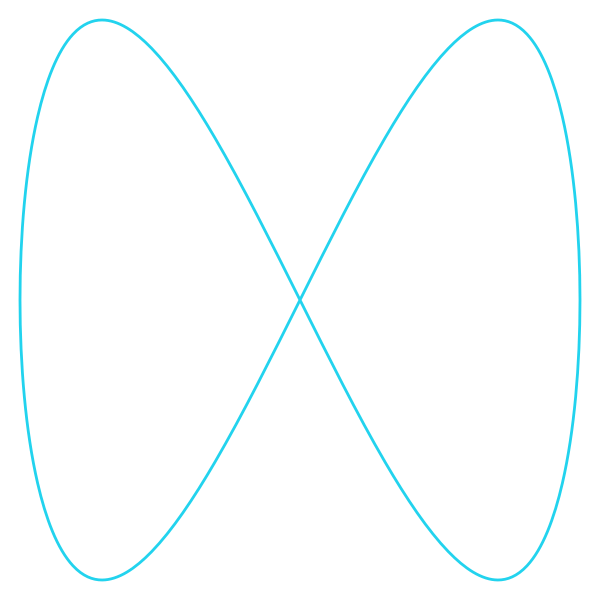
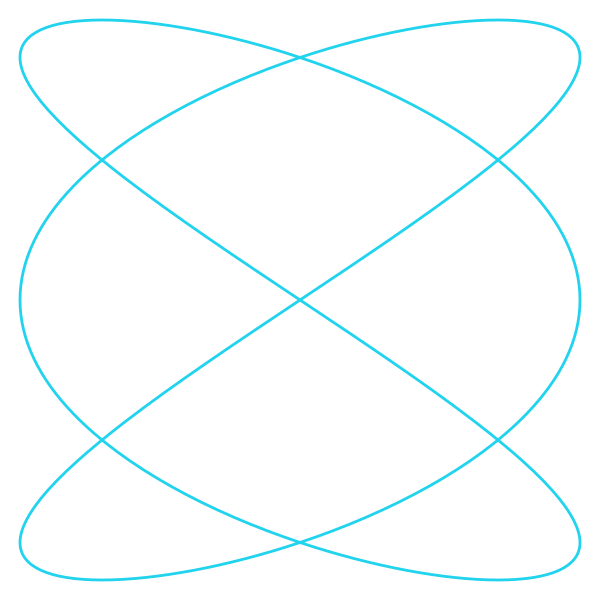
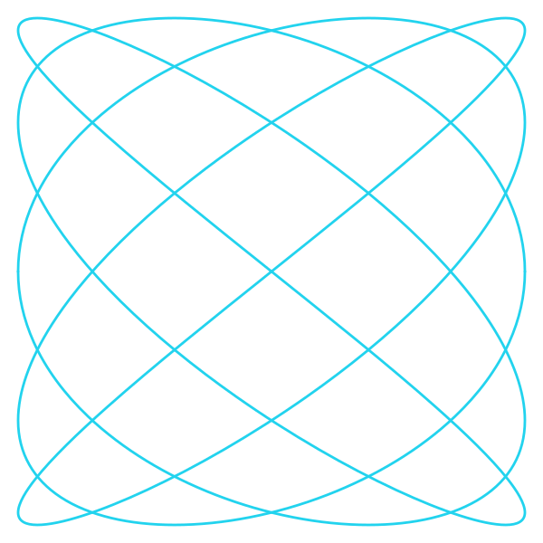
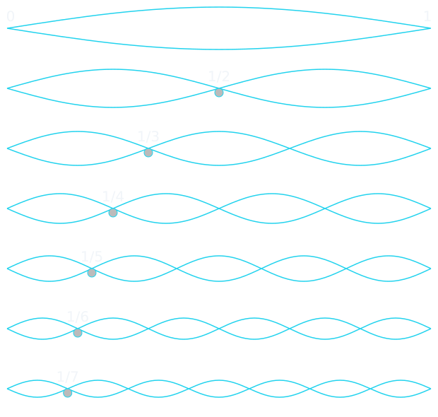
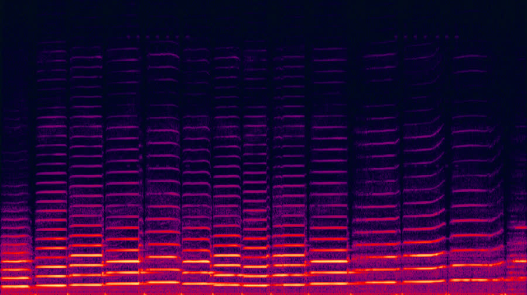
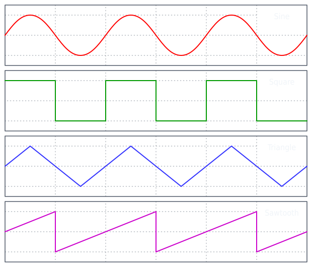
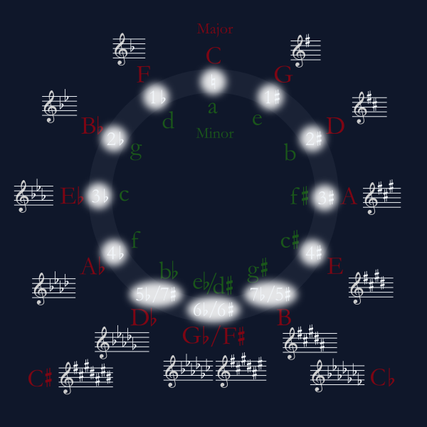
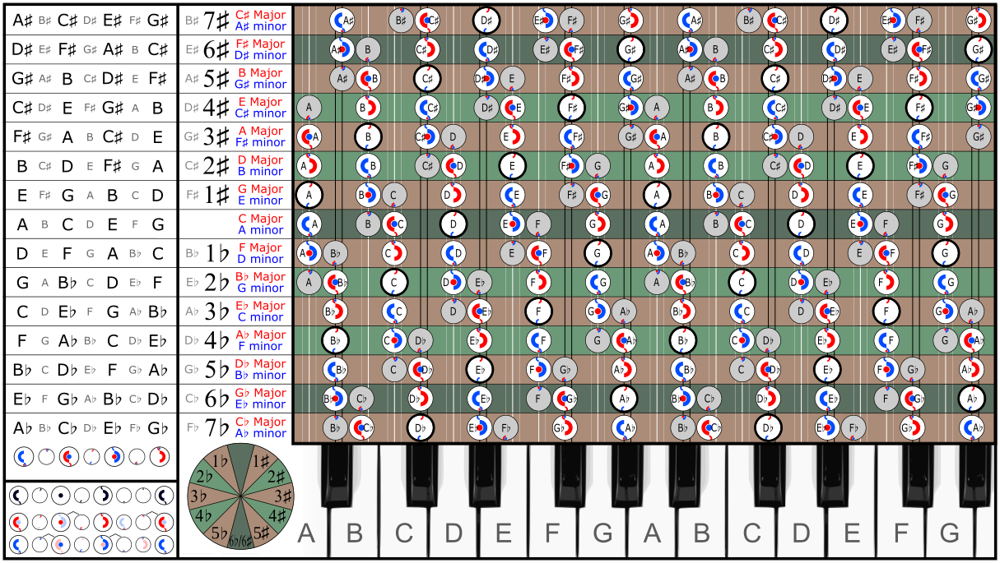
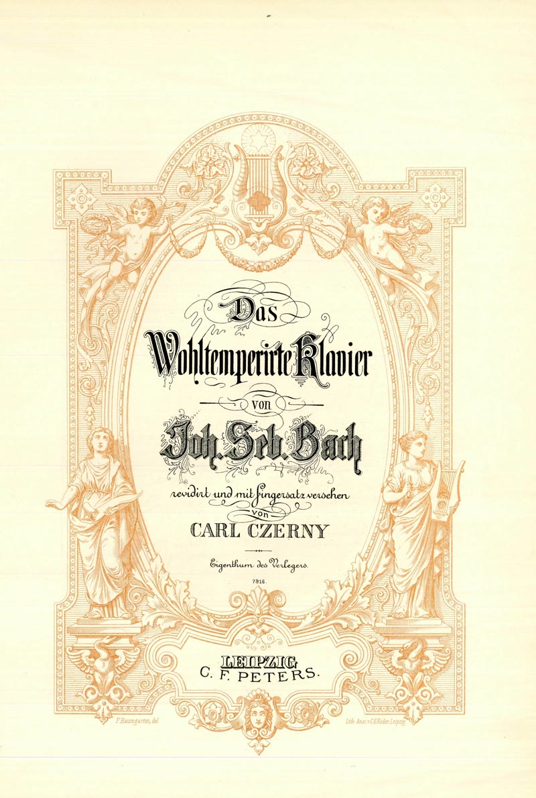
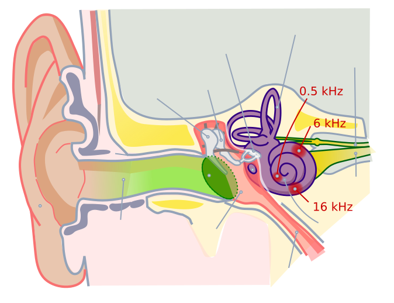

Lieber schauen statt lesen?
8 Minuten · Von Pythagoras zum wohltemperierten Gehör
Kapitel 1
Ein Ton, zwei Töne, ein Rätsel
Schlag zwei Töne gleichzeitig an. Manchmal klingt es schön – weich, rund, verschmelzend. Manchmal klingt es rau, schwebend, unangenehm. Diesen Unterschied hört jeder Mensch, egal ob musikalisch ausgebildet oder nicht. Aber warum?
Die Antwort beginnt mit einer Beobachtung, die zweieinhalb Jahrtausende alt ist. Der Legende nach ging Pythagoras an einer Schmiede vorbei und hörte, dass manche Hammerpaare harmonisch klangen und andere nicht. Er untersuchte die Gewichte der Hämmer und fand ganzzahlige Verhältnisse. Die Geschichte ist wahrscheinlich erfunden – Hammergewichte bestimmen nicht direkt die Tonhöhe – aber die Einsicht dahinter ist real: Konsonanz hat etwas mit einfachen Zahlverhältnissen zu tun.
Frequenz: Was ein Ton wirklich ist
Ein Ton ist eine periodische Druckschwankung der Luft. Die Anzahl der Schwingungen pro Sekunde nennen wir Frequenz, gemessen in Hertz (Hz). Der Kammerton A4 schwingt 440 Mal pro Sekunde: \(f = 440 \,\text{Hz}\). Ein tieferes A3 schwingt genau halb so schnell: \(f = 220 \,\text{Hz}\). Das Verhältnis ist \(2{:}1\) – eine Oktave.
Die fundamentale Frage der Musiktheorie lässt sich so formulieren: Welche Frequenzverhältnisse klingen „gut“, und warum?
Die einfachsten Verhältnisse
Pythagoras und seine Schüler identifizierten die konsonantesten Intervalle anhand einfacher Bruchzahlen:
| Intervall | Verhältnis | Beispiel (Hz) | Empfindung |
|---|---|---|---|
| Oktave | 2:1 | 440 & 880 | Verschmelzend |
| Quinte | 3:2 | 440 & 660 | Offen, kräftig |
| Quarte | 4:3 | 440 & 587 | Stabil, ruhig |
| Große Terz | 5:4 | 440 & 550 | Warm, heiter |
| Kleine Terz | 6:5 | 440 & 528 | Weich, melancholisch |
| Tritonus | 45:32 | 440 & 618 | Gespannt, dissonant |
Je einfacher das Verhältnis, desto konsonanter der Klang. Diese Faustregel funktioniert erstaunlich gut – aber warum sie funktioniert, konnten erst Helmholtz und später Plomp & Levelt erklären.
Lissajous-Figuren: Konsonanz sichtbar machen
Wenn man zwei Sinusschwingungen gegeneinander aufträgt – eine auf der x-Achse, die andere auf der y-Achse – entstehen Lissajous-Figuren. Bei einfachen Frequenzverhältnissen sind die Muster geschlossen und einfach. Bei komplizierten Verhältnissen werden sie chaotisch.

Oktave (2:1)

Quinte (3:2)

Große Terz (5:4)
Die Oktave (2:1) erzeugt eine einfache Acht. Die Quinte (3:2) ein etwas komplexeres, aber klar geschlossenes Muster. Die große Terz (5:4) wird schon verschlungener – aber bleibt geschlossen. Ein Tritonus (45:32) würde beinahe die gesamte Fläche füllen, bevor sich die Kurve schließt.
Helmholtz: Schwebungen und Rauigkeit
Hermann von Helmholtz lieferte 1863 in seiner „Lehre von den Tonempfindungen“ die erste physikalische Erklärung. Wenn zwei Töne nah beieinander liegen, hört man Schwebungen – periodische Lautstärkeschwankungen mit der Frequenz \(|f_1 - f_2|\).
Das ist die Produktformel für die Addition zweier Sinusfunktionen. Der Cosinus-Term moduliert die Amplitude mit der Schwebungsfrequenz \(|f_1 - f_2|\). Langsame Schwebungen (2–6 Hz) nehmen wir als angenehmes „Vibrato“ wahr. Aber im Bereich von 20–50 Hz wird die Empfindung unangenehm: ein raues, kratzendes Gefühl, das Helmholtz als Rauigkeit (roughness) bezeichnete.
Helmholtz' These: Dissonanz ist Rauigkeit. Zwei Töne klingen dissonant, wenn ihre Frequenzen (oder die ihrer Oberton-Paare) so dicht beieinander liegen, dass die Schwebungen im rauen Bereich landen.
Plomp & Levelt: Die Dissonanzkurve
1965 präzisierten Reinier Plomp und Willem Levelt die Idee mit einem berühmten Experiment. Sie spielten Versuchspersonen Paare reiner Sinustöne vor und ließen die empfundene Rauigkeit bewerten. Das Ergebnis: eine universelle Dissonanzkurve.
Die Rauigkeit ist maximal, wenn der Frequenzabstand etwa 25% der kritischen Bandbreite beträgt – ein Konzept aus der Psychoakustik, auf das wir in Kapitel 6 zurückkommen. Bei größerem Abstand nimmt die Rauigkeit ab und erreicht bei einfachen Verhältnissen lokale Minima.
Die Plomp-Levelt-Kurve für zwei reine Töne hat ein einfaches Muster: ein Maximum bei etwa einem Viertelton, dann monotoner Abfall. Aber für komplexe Töne mit Oberton-Reihen (also alle echten Instrumente) summiert sich die Rauigkeit über alle Oberton-Paare – und dann tauchen die pythagoräischen Verhältnisse als scharfe Minima auf. Die einfachen Brüche sind nicht arbiträr: Sie sind die Punkte, an denen die Oberton-Reihen beider Töne maximal überlappen statt gegeneinander zu schlagen.
Probier es selbst
Bewege den Frequenzregler und höre, wie die Konsonanz sich verändert. Die Dissonanzkurve zeigt in Echtzeit, wo die rauen Stellen liegen. Wechsle zwischen Sinuston und Klangfarbe mit Oberton-Reihe – und beobachte, wie die Minima bei den pythagoräischen Verhältnissen auftauchen.
Euler und die Gradus-Funktion
Leonhard Euler schlug 1739 ein einfaches Maß für die „Einfachheit“ eines Frequenzverhältnisses vor: den Gradus suavitatis (Grad der Lieblichkeit). Für ein Verhältnis \(p{:}q\) (gekürzt, also \(\gcd(p,q) = 1\)) berechnet man:
wobei \(p_i\) die Primfaktoren von \(p \cdot q\) sind (mit Vielfachheit). Je kleiner \(\Gamma\), desto konsonanter. Die Oktave (2:1) hat \(\Gamma = 2\), die Quinte (3:2) hat \(\Gamma = 4\), der Tritonus (45:32) hat \(\Gamma = 14\). Eulers Formel war seiner Zeit voraus – sie quantifiziert dieselbe Intuition, die Plomp und Levelt zwei Jahrhunderte später experimentell bestätigten.
Zwischenstand: Konsonanz ist nicht willkürlich. Einfache Frequenzverhältnisse klingen gut, weil sie minimale Rauigkeit erzeugen – das ist experimentell belegt (Plomp & Levelt 1965) und theoretisch verstanden (Helmholtz 1863). Aber das Bild ist noch nicht vollständig: Rauigkeit erklärt nicht, warum Dur fröhlich und Moll traurig klingt. Dafür brauchen wir zunächst die Oberton-Reihe.
Kapitel 2
Die Obertonreihe
Wenn du eine Gitarrensaite anschlägst, hörst du nicht einen Ton. Du hörst Dutzende – gleichzeitig. Was du als „einen Ton“ wahrnimmst, ist in Wirklichkeit ein Akkord aus Oberton-Frequenzen, die dein Gehirn zu einer einzigen Klangfarbe verschmilzt.
Stehende Wellen auf einer Saite
Eine Saite der Länge \(L\), an beiden Enden eingespannt, kann nur auf bestimmte Weisen schwingen. Die Randbedingungen erzwingen, dass die Auslenkung an beiden Enden null ist. Die einzigen Funktionen, die das erfüllen, sind Sinuswellen, deren halbe Wellenlänge ganzzahlig in \(L\) passt:
Der Grundton \(f_1\) hat \(n=1\): eine einzelne halbe Sinuswelle. Der zweite Teilton \(f_2 = 2f_1\) hat zwei Halbwellen, schwingt also eine Oktave höher. Der dritte \(f_3 = 3f_1\) eine Quinte darüber. Und so weiter.

Diese diskreten Frequenzen \(f_n = n \cdot f_1\) bilden die Obertonreihe (harmonic series). Sie ist keine menschliche Erfindung – sie folgt direkt aus der Physik schwingender Saiten. Und sie enthält, ganz von selbst, die Intervalle der Musik:
| Teilton | Verhältnis zu \(f_1\) | Intervall | Beispiel (C = 131 Hz) |
|---|---|---|---|
| 1 | 1 | Grundton | C (131 Hz) |
| 2 | 2 | Oktave | C (262 Hz) |
| 3 | 3 | Oktave + Quinte | G (393 Hz) |
| 4 | 4 | Zwei Oktaven | C (524 Hz) |
| 5 | 5 | Zwei Okt. + große Terz | E (655 Hz) |
| 6 | 6 | Zwei Okt. + Quinte | G (786 Hz) |
| 7 | 7 | Naturseptime (kein Klavier-Ton!) | B♭ (917 Hz) |
Beachte: Die Teiltöne 4, 5, 6 bilden das Verhältnis \(4{:}5{:}6\). Das ist ein Dur-Dreiklang. Die Natur „spielt“ Dur ganz von allein. Moll muss man suchen.
Warum jedes Instrument anders klingt
Die Obertonreihe ist für jedes Instrument gleich – die Frequenzen sind immer \(f, 2f, 3f, \ldots\). Was sich unterscheidet, sind die relativen Lautstärken der Teiltöne: die Amplituden \(A_1, A_2, A_3, \ldots\). Genau das macht die Klangfarbe (Timbre) aus.
Eine Flöte hat fast nur den Grundton – beinahe ein reiner Sinus. Eine Oboe hat starke ungerade Oberton-Anteile – daher ihr nasaler Klang. Eine Trompete hat viele starke Oberton-Paare – daher ihr brillanter Klang. Ein Klavier hat am Anfang extrem viele Oberton-Anteile (der Hammeranschlag), die dann unterschiedlich schnell verklingen.

Die Fourier-Zerlegung: Jeder Klang ist eine Summe
Die mathematische Formulierung ist elegant. Jede periodische Funktion lässt sich als Summe von Sinus- und Cosinusfunktionen darstellen – die Fourier-Reihe:
Die Koeffizienten \(a_n, b_n\) (oder äquivalent die Amplituden \(A_n\) und Phasen \(\phi_n\)) sind der Fingerabdruck des Klangs. Das Spektrum ist die Klangfarbe.

Probier es selbst
Mische die Amplituden der ersten acht Oberton-Anteile und höre, wie sich die Klangfarbe verändert. Starte mit einem reinen Sinus (nur \(A_1\)), dann füge nacheinander Oberton-Anteile hinzu. Kannst du eine Flöte, eine Klarinette oder ein Cembalo nachbauen?
Warum Oberton-Reihen Konsonanz erklären
Jetzt schließt sich der Kreis zu Kapitel 1. Wenn zwei Töne im Verhältnis \(3{:}2\) (Quinte) stehen, dann ist der 3. Teilton des unteren Tons identisch mit dem 2. Teilton des oberen Tons. Die Oberton-Reihen überlappen – sie verschmelzen. Bei einem Frequenzverhältnis von \(45{:}32\) (Tritonus) überlappen die Oberton-Reihen erst bei sehr hohen Teiltönen – und in der Zwischenzeit erzeugen eng benachbarte Oberton-Paare Rauigkeit.
Die Plomp-Levelt-Dissonanzkurve für komplexe Töne ist nichts anderes als die Summe der Rauigkeiten aller Oberton-Paare. Die Konsonanz eines Intervalls ist keine metaphysische Eigenschaft – sie ist eine berechenbare Größe, die aus der Physik stehender Wellen folgt.
Zwischenstand: Jeder Klang ist eine Summe harmonischer Teiltöne (\(f, 2f, 3f, \ldots\)). Die relativen Amplituden bestimmen die Klangfarbe. Konsonanz entsteht, wenn sich Oberton-Reihen überlappen. Und die Oberton-Reihe enthält bereits den Dur-Dreiklang: die Teiltöne 4, 5, 6. Was aber ist mit Moll?
Kapitel 3
Dur, Moll und die Frage nach dem Gefühl
Dur klingt fröhlich, Moll klingt traurig – das ist eines der hartnäckigsten Klischees der Musiktheorie. Und wie alle guten Klischees enthält es einen wahren Kern, aber auch eine Übervereinfachung.
Der Dur-Dreiklang: 4:5:6
Ein Dur-Dreiklang besteht aus Grundton, großer Terz und Quinte. In reiner Stimmung lauten die Frequenzverhältnisse:
Das bedeutet: Wenn der Grundton bei 400 Hz liegt, liegt die Terz bei 500 Hz und die Quinte bei 600 Hz. Drei aufeinanderfolgende ganzzahlige Vielfache. Bemerkenswert einfach.
Mehr noch: Die Frequenzen 400, 500 und 600 Hz sind alle Vielfache von 100 Hz (dem 4., 5. und 6. Teilton). Der Dur-Dreiklang klingt, als wäre er ein Fragment einer einzigen Oberton-Reihe – weil er es ist. Das erklärt die empfundene Verschmelzung: Das Gehirn interpretiert die drei Töne als Teile eines einzigen Klangs mit der (virtuellen) Grundfrequenz 100 Hz.
Der Moll-Dreiklang: 10:12:15
Ein Moll-Dreiklang besteht aus Grundton, kleiner Terz und Quinte. Die Frequenzverhältnisse:
Statt \(4{:}5{:}6\) haben wir \(10{:}12{:}15\) – die Zahlen sind deutlich größer. Der kleinste gemeinsame Grundton (das kgV) wäre 1, aber die Frequenzen 10, 12 und 15 sind nicht aufeinanderfolgende Vielfache einer einzigen Frequenz. Die virtuelle Grundfrequenz ist ambig: Ist es der 10. Teilton von etwas? Der 12.? Die Verschmelzung ist unvollständig.
Norman Cook formulierte es 2007 so: Dur suggeriert einen Sprecher (eine kohärente Oberton-Quelle), Moll suggeriert mehrere Sprecher (eine ambige Quellenzuordnung). Die Traurigkeit von Moll wäre demnach keine direkte Emotion, sondern eine kognitive Unsicherheit: das Gehirn kann die Töne nicht so sauber zu einer einzigen Quelle zusammenfügen.
Was sagt die Psychologie?
Die empirische Forschung bestätigt den Dur-fröhlich/Moll-traurig-Effekt für westliche Hörer mit enormer Konsistenz. In Studien mit Tausenden von Teilnehmern ordnen über 90% der westlich sozialisierten Erwachsenen Dur als „happy“ und Moll als „sad“ ein (Kastner & Crowder, 1990; Dalla Bella et al., 2001).
Aber ist das Biologie oder Kultur?
Die Tsimane-Studie: Ein Experiment im Regenwald
2016 veröffentlichten Josh McDermott und Kollegen eine bemerkenswerte Studie im Fachjournal Nature. Sie reisten zu den Tsimane, einer indigenen Bevölkerungsgruppe im bolivianischen Amazonasgebiet, die kaum Kontakt mit westlicher Musik hatte.
Das Ergebnis war überraschend: Die Tsimane bewerteten konsonante und dissonante Intervalle als gleich angenehm. Sie hatten keine Präferenz für Oktaven, Quinten oder Dur-Dreiklänge gegenüber dissonanten Kombinationen. Für westliche Hörer ist diese Präferenz so selbstverständlich, dass sie natürlich erscheint – aber die Tsimane-Daten zeigen: Die Präferenz für Konsonanz ist (zumindest teilweise) gelernt.
Allerdings: Die Tsimane konnten Rauigkeit durchaus wahrnehmen – sie fanden raue Klänge unangenehm. Was sie nicht hatten, war die ästhetische Präferenz für einfache Frequenzverhältnisse. Die sensorische Grundlage (Rauigkeitserkennung) scheint universell zu sein; die emotionale Bewertung (Dur = fröhlich) ist kulturell geprägt.
Natur oder Kultur? Beides.
Die aktuelle wissenschaftliche Sicht lässt sich so zusammenfassen:
Universell (Natur):
• Rauigkeitserkennung ist angeboren (schon Säuglinge reagieren auf Dissonanz).
• Die Oberton-Reihe ist eine physikalische Tatsache, keine kulturelle Konvention.
• Die Fähigkeit zur Tonhöhenunterscheidung ist angeboren.
Kulturell geprägt (Nurture):
• Die Präferenz für Konsonanz vs. Dissonanz.
• Die emotionale Zuordnung Dur/fröhlich, Moll/traurig.
• Welche Skalen und Stimmungen als „richtig“ empfunden werden.
• Welche Akkordfolgen „Spannung“ und „Auflösung“ erzeugen.
Die Biologie liefert das Rohmaterial (Oberton-Reihe, Rauigkeitserkennung, Frequenzanalyse im Innenohr). Die Kultur formt daraus musikalische Grammatiken. Dur klingt fröhlich – für uns. Aber nicht für alle Menschen auf der Welt.
Probier es selbst
Spiele einen Dur-Dreiklang und einen Moll-Dreiklang. Sieh die Frequenzverhältnisse, höre den Klang, beobachte die Überlappung der Oberton-Reihen. Verschiebe den Grundton – das Muster bleibt gleich, die Empfindung auch.
Jenseits von Dur und Moll
Westliche Musik beschränkt sich auf 12 Töne pro Oktave. Aber andere Kulturen nutzen völlig andere Systeme:
• Arabische Maqam-Musik verwendet Viertelton-Schritte – 24 Töne pro Oktave, mit Intervallen, die im westlichen System nicht existieren.
• Javanische Gamelan-Musik verwendet Slendro (5 Töne) und Pelog (7 Töne) – Skalen, die absichtlich „verstimmt“ klingen, um Schwebungen zu erzeugen, die als schön empfunden werden.
• Indische Raga-Musik definiert nicht nur Skalen, sondern auch aufsteigende und absteigende Regeln, emotionale Zuordnungen zu Tageszeiten und Jahreszeiten.
• Balinesische Gamelan-Musik stimmt sogar absichtlich Instrumenten-Paare gegeneinander leicht verstimmt, um ein schwebendes „Ombak“ (Welle) zu erzeugen.
Was all diese Systeme teilen: Sie nutzen die Oberton-Reihe als Rohmaterial, aber formen daraus ganz verschiedene ästhetische Landschaften. Die Physik der Schwingungen ist universell; die Musik ist es nicht.
Zwischenstand: Dur (4:5:6) suggeriert eine kohärente Oberton-Quelle – daher die empfundene „Klarheit“. Moll (10:12:15) ist ambiger. Aber die emotionale Bewertung ist kulturell geprägt: Die Tsimane haben keine Konsonanz-Präferenz. Die Biologie liefert das Rohmaterial (Oberton-Reihe, Rauigkeitserkennung), die Kultur formt die Musik. Und jetzt stehen wir vor einem praktischen Problem: Wie stimmen wir ein Instrument?
Kapitel 4
Das Komma des Pythagoras
Stell dir vor, du stimmst ein Klavier. Du beginnst mit einem C und stimmst von dort aus in reinen Quinten aufwärts: C → G → D → A → E → B → F♯ → C♯ → G♯ → D♯ → A♯ → E♯ → B♯. Nach 12 Quinten bist du theoretisch wieder beim Ausgangs-C angekommen – sieben Oktaven höher.
Theoretisch. In der Praxis passiert etwas Unbequemes.
Die Rechnung
Zwölf reine Quinten aufwärts bedeuten: Multipliziere die Frequenz 12 Mal mit \(3/2\).
Sieben Oktaven aufwärts bedeuten: Multipliziere mit \(2^7 = 128\).
Das Verhältnis der beiden:
Das ist nicht 1. Es fehlen \(1{,}36\%\) – umgerechnet 23,46 Cent. (Ein Cent ist ein Hundertstel eines gleichstufigen Halbtons. Die meisten Menschen hören Unterschiede ab etwa 5–10 Cent.) Der Unterschied von 23,46 Cent ist eindeutig hörbar.
Dieses winzige, aber hartnäckige Verhältnis \(3^{12}/2^{19}\) heißt das pythagoräische Komma. Es ist der mathematische Beweis, dass der Quintenzirkel sich nicht exakt schließt.

Warum das ein fundamentales Problem ist
Der Grund liegt in der Zahlentheorie. Reine Quinten sind Potenzen von 3 (genauer: \(3^n / 2^m\)), und Oktaven sind Potenzen von 2. Eine reine Quinte würde exakt in Oktaven aufgehen, wenn es ganze Zahlen \(n, m\) gäbe mit \((3/2)^n = 2^m\), also \(3^n = 2^{n+m}\). Aber die Gleichung
hat für positive ganze Zahlen \(n, k\) keine Lösung. (Beweis: Links ist die Zahl ungerade, rechts gerade. Widerspruch.) Das pythagoräische Komma ist keine Ungenauigkeit – es ist ein Theorem. Quinten und Oktaven sind inkommensurabel, wie die Diagonale eines Quadrats zu seiner Seitenlänge.

Die Wolfsquinte
In der Praxis bedeutet das pythagoräische Komma: Wenn man 11 von 12 Quinten rein stimmt, muss die letzte Quinte das gesamte Komma schlucken – sie wird um 23,46 Cent zu eng. Diese verstümmelte Quinte klingt so schlecht, dass man ihr den Namen Wolfsquinte gab – sie „heult wie ein Wolf“.
In der pythagoräischen Stimmung lag die Wolfsquinte üblicherweise zwischen G♯ und E♭. Das bedeutete: Tonarten mit vielen Kreuz- oder Be-Vorzeichen waren unbenutzbar. Ein Komponist konnte in C-Dur wunderbar schreiben, aber F♯-Dur klang grauenhaft. Das schränkte die Musik jahrhundertelang ein.
Andere Kommata: Das syntonische Komma
Das pythagoräische Komma ist nicht das einzige Problem. Es gibt auch das syntonische Komma (81:80, ca. 21,5 Cent): der Unterschied zwischen einer pythagoräischen großen Terz (\(81/64\), vier Quinten aufwärts) und einer reinen großen Terz (\(5/4 = 80/64\)).
Das pythagoräische System kennt nur die Primzahlen 2 und 3. Sobald man die Primzahl 5 hinzunimmt (für reine Terzen), entsteht ein neues Komma. Man kann reine Quinten oder reine Terzen haben – aber nicht beides gleichzeitig. Das ist die grundlegende Spannung der Stimmungstheorie.
Die historischen Stimmungssysteme im Vergleich
| Stimmung | Quinten | Terzen | Alle Tonarten? | Epoche |
|---|---|---|---|---|
| Pythagoräisch | 11 rein, 1 Wolf | Alle zu groß | Nein | Antike – 1400 |
| Mitteltönig (1/4) | 8 eng, 1 Wolf | 8 rein | Nein | 1500 – 1700 |
| Werckmeister III | Unregelmäßig | Unregelmäßig | Ja (Charakter) | 1691 |
| Gleichstufig (12-TET) | Alle ~2 Cent eng | Alle ~14 Cent zu groß | Ja (identisch) | ab ~1800 |
Probier es selbst
Wähle eine Stimmung und höre, wie derselbe Akkord in verschiedenen Tonarten klingt. In pythagoräischer Stimmung klingt C-Dur perfekt, aber F♯-Dur grauenhaft. In gleichstufiger Stimmung klingt alles gleich – aber nichts ist perfekt rein.
Zwischenstand: Das pythagoräische Komma (\(3^{12}/2^{19} \approx 1{,}0136\)) ist ein zahlentheoretisches Theorem: Quinten und Oktaven sind inkommensurabel. Kein Stimmungssystem kann gleichzeitig reine Quinten, reine Terzen und Transponierbarkeit bieten. Jede Stimmung ist ein Kompromiss. Der radikalste Kompromiss – die gleichstufige Stimmung – brauchte Jahrhunderte, um sich durchzusetzen.
Kapitel 5
Das wohltemperierte Klavier
1722 schrieb Johann Sebastian Bach eine Sammlung von 24 Präludien und Fugen – je eines in jeder Dur- und Moll-Tonart. Er nannte sie „Das Wohltemperierte Clavier“. Der Titel war ein Statement: Alle Tonarten sind spielbar.

Welche Stimmung Bach genau verwendete, ist bis heute umstritten. Es war nicht die gleichstufige Stimmung – die kam erst später. Wahrscheinlich war es eine wohltemperierte Stimmung (wie Werckmeister III oder eine ähnliche), bei der die Quinten unregelmäßig verengt werden, sodass es keine Wolfsquinte gibt, aber jede Tonart einen eigenen Charakter behält.
Der Weg zur Gleichstufigkeit
Die Idee, alle 12 Halbtöne exakt gleich groß zu machen, ist älter, als man denkt. Der chinesische Gelehrte Zhu Zaiyu berechnete sie bereits 1584. In Europa publizierte Simon Stevin um 1585 dieselbe Idee. Aber die Umsetzung dauerte Jahrhunderte – Musiker lehnten die gleichstufige Stimmung ab, weil die Terzen zu unrein klangen.
Die mathematische Formulierung ist elegant. Wir suchen 12 gleiche Schritte, die zusammen eine Oktave (Faktor 2) ergeben. Jeder Schritt muss also den Faktor
haben. Die Frequenz des \(n\)-ten Halbtons über einem Grundton \(f_0\) ist:
Ausgehend von A4 = 440 Hz ergibt das zum Beispiel:
| Ton | Halbtöne über A | Gleichstufig (Hz) | Rein (Hz) | Differenz (Cent) |
|---|---|---|---|---|
| A | 0 | 440,00 | 440,00 | 0,0 |
| C♯ | 4 | 554,37 | 550,00 | +13,7 |
| D | 5 | 587,33 | 586,67 | +1,9 |
| E | 7 | 659,26 | 660,00 | −1,9 |
| E (Quinte) | 7 | 659,26 | 660,00 | −1,9 |
Die gleichstufige Quinte ist nur 1,9 Cent zu eng – kaum hörbar. Aber die gleichstufige große Terz ist 13,7 Cent zu groß – das hören trainierte Ohren deutlich. Das ist der Preis der Gleichstufigkeit: perfekte Transponierbarkeit gegen leicht unreine Terzen.
Die Logarithmus-Idee
Warum 12? Warum nicht 19 oder 31 oder 53 Töne pro Oktave? Die Antwort liegt in der Approximationstheorie. Die Quinte hat das Frequenzverhältnis \(3/2\). In der gleichstufigen Stimmung mit \(N\) Tönen pro Oktave wird sie durch \(2^{k/N}\) approximiert, wobei \(k\) die Anzahl der Halbtöne ist. Wir suchen:
Die besten Kettenbrüche-Approximationen von \(0{,}58496\ldots\) sind: \(1/2\), \(3/5\), \(7/12\), \(24/41\), \(31/53\), \(\ldots\) Die Nenner geben die Anzahl der Töne pro Oktave: 2, 5, 12, 41, 53. Zwölf ist der erste Nenner, der eine hervorragende Approximation der Quinte liefert (\(7/12 = 0{,}58333\ldots\), Fehler nur 1,9 Cent). Für noch reinere Quinten und Terzen wären 53 Töne pro Oktave ideal – aber 53 Tasten pro Oktave sind für menschliche Hände nicht praktikabel.
Die Ironie der Gleichstufigkeit
Die gleichstufige Stimmung ist mathematisch gesehen ein Verzicht auf jede reine Harmonie zugunsten einer einzigen Eigenschaft: Translationsinvarianz. Jeder Halbtonschritt ist gleich groß, also klingt jede Tonart gleich. Modulation wird frei. Transposition wird trivial.
In der Sprache der Mathematik: Die gleichstufige Stimmung ersetzt die multiplikative Gruppe der rationalen Frequenzverhältnisse durch die zyklische Gruppe \(\mathbb{Z}_{12}\). Ganzzahlige Verhältnisse werden durch irrationale Zahlen ersetzt – \(\sqrt[12]{2}\) ist irrational, wie Pythagoras' Diagonale. Der Preis: Kein einziges Intervall außer der Oktave ist rein. Der Gewinn: Jedes Intervall ist überall gleich.
Historisch war das ein radikaler Kompromiss. Barocke Musiker lehnten ihn ab, weil sie den Charakter der einzelnen Tonarten schätzten – D-Dur klang in Werckmeister-Stimmung anders als B-Dur, und das war gewünscht. Erst das 19. Jahrhundert mit seinem wachsenden Bedürfnis nach Modulation und Chromatik machte die Gleichstufigkeit zur Standardstimmung. Heute ist sie so dominant, dass die meisten Menschen sie für „natürlich“ halten – was sie definitiv nicht ist.
Microtonale Renaissance
Im 20. und 21. Jahrhundert gibt es eine Gegenbewegung. Komponisten wie Harry Partch (43 Töne pro Oktave), Ben Johnston (reine Stimmung) und Sevish (elektronische Microtonalmusik) erforschen Stimmungssysteme jenseits der 12-TET. Software-Synthesizer ermöglichen beliebige Stimmungen ohne physische Einschränkungen. Die Frage „Wie viele Töne braucht eine Oktave?“ ist wieder offen.
Zwischenstand: Die gleichstufige Stimmung mit \(f_n = f_0 \cdot 2^{n/12}\) opfert Reinheit für Transponierbarkeit. Zwölf Töne sind kein Naturgesetz, sondern die beste Kettenbrüche-Approximation, die noch auf eine Tastatur passt. Bachs Wohltemperiertes Klavier feierte den Sieg über die Wolfsquinte. Aber – warum akzeptiert unser Gehör diese Kompromisse? Wie verarbeitet das Ohr Frequenzen überhaupt?
Kapitel 6
Das wohltemperierte Gehör
Bisher haben wir Musik als physikalisches Phänomen betrachtet – Frequenzen, Verhältnisse, stehende Wellen. Aber Musik existiert nicht in der Luft. Sie existiert im Gehirn. Und zwischen Schallwelle und Bewusstsein liegt ein überraschend komplexes Organ: das Innenohr.
Die Cochlea: Eine biologische Fourier-Analyse
Tief im Innenohr liegt die Cochlea (Hörschnecke) – ein spiralförmiger, mit Flüssigkeit gefüllter Kanal, etwa so groß wie eine Erbse. Entrollt misst sie ungefähr 3,5 Zentimeter. Auf ihrer gesamten Länge liegt die Basilarmembran – und diese Membran ist der Schlüssel zu allem.
Die Basilarmembran ist am Eingang (nahe dem ovalen Fenster) schmal und steif, und am Ende (Apex) breit und weich. Hohe Frequenzen bringen den steifen Anfang zum Schwingen, tiefe Frequenzen den weichen Teil am Ende. Jede Stelle der Membran reagiert am stärksten auf eine bestimmte Frequenz – die tonotopische Abbildung.

Das ist bemerkenswert: Die Cochlea führt im Wesentlichen eine Fourier-Analyse in Hardware durch. Sie zerlegt den eingehenden Schall in seine Frequenzkomponenten – nicht durch Mathematik, sondern durch Mechanik. Georg von Békésy erhielt 1961 den Nobelpreis für die experimentelle Bestätigung dieser Theorie.
Kritische Bänder: Die Auflösung des Ohrs
Die Basilarmembran hat eine begrenzte Frequenzauflösung. Jeder Punkt reagiert nicht nur auf eine einzige Frequenz, sondern auf einen Frequenzbereich – das sogenannte kritische Band (critical band).
Die Breite eines kritischen Bands ist frequenzabhängig. Die Näherungsformel nach Barkhausen/Zwicker:
Bei tiefen Frequenzen (unter 500 Hz) ist das kritische Band etwa 100 Hz breit. Bei hohen Frequenzen wächst es auf mehrere Hundert Hertz an. Das erklärt, warum tiefe Akkorde schnell „matschen“: Bei 100 Hz ist das kritische Band fast so breit wie ein ganzer Ton, und die Oberton-Paare landen im rauen Bereich.
Jetzt verbindet sich alles: Die Plomp-Levelt-Dissonanz aus Kapitel 1 ist genau die Rauigkeit, die entsteht, wenn zwei Frequenzen innerhalb desselben kritischen Bands liegen. Die Dissonanzkurve ist eine direkte Konsequenz der physikalischen Auflösung der Cochlea.
Kombinationstöne: Wenn das Ohr erfindet
Das Ohr ist kein passiver Empfänger – es ist ein aktiver Signalverarbeiter. Wenn zwei laute Töne mit Frequenzen \(f_1\) und \(f_2\) gleichzeitig erklingen, erzeugt das Innenohr zusätzliche Töne, die physikalisch nicht vorhanden sind: Kombinationstöne (combination tones).
Der prominenteste ist der Differenzton: \(f_d = f_2 - f_1\). Bei einer reinen Quinte (660 Hz und 440 Hz) ist der Differenzton \(660 - 440 = 220\) Hz – genau eine Oktave unter dem tieferen Ton. Der Differenzton verstärkt den Grundton. Bei einer Sekunde (440 Hz und 495 Hz) ist der Differenzton 55 Hz – ein tiefer Brummton, der weder zum einen noch zum anderen Ton passt. Dissonanz.
Es gibt auch kubische Differenztöne (\(2f_1 - f_2\)) und höhere Ordnungen. Diese Kombinationstöne entstehen durch die Nichtlinearität des Innenohrs – die äußeren Haarzellen verstärken den Schall aktiv und führen dabei leichte Verzerrungen ein. Was wie ein Defekt klingt, ist in Wirklichkeit ein Feature: Kombinationstöne helfen dem Gehirn bei der Grundtonerkennung.
Die fehlende Grundfrequenz
Eines der faszinierendsten Phänomene der Psychoakustik: Wenn du die Frequenzen 400, 500, 600, 700 Hz hörst, nimmst du den Ton 200 Hz wahr – obwohl 200 Hz physikalisch gar nicht vorhanden ist. Das Gehirn berechnet die fehlende Grundfrequenz (missing fundamental) aus den Abständen der Oberton-Reihe.
Deshalb hörst du den Bass in kleinen Laptop-Lautsprechern, obwohl diese physikalisch keine Frequenzen unter 150 Hz wiedergeben können. Dein Gehirn rekonstruiert den Grundton aus den vorhandenen Oberton-Anteilen. Das funktioniert, weil die Oberton-Reihe ein eindeutiges Muster hat: gleichmäßig verteilte Frequenzen mit dem Abstand \(f_1\).
Das ist auch der Grund, warum der Dur-Dreiklang (4:5:6) so klar klingt: Das Gehirn erkennt sofort die fehlende Grundfrequenz (1) und ordnet die drei Töne einer einzigen virtuellen Quelle zu. Beim Moll-Dreiklang (10:12:15) ist die fehlende Grundfrequenz ambiger – daher die empfundene Komplexität.
Oktaväquivalenz: Warum C immer C ist
Eines der universellsten Phänomene der Musik: Töne, die eine Oktave auseinander liegen, werden als „gleich“ empfunden. Das tiefe C und das hohe C sind verschiedene Töne, aber sie tragen denselben Namen, die gleiche Funktion. Diese Oktaväquivalenz (octave equivalence) findet sich in jeder bekannten Musikkultur.
Die physikalische Erklärung: Wenn \(f\) und \(2f\) gleichzeitig erklingen, ist jeder Oberton von \(2f\) auch ein Oberton von \(f\). Die Oberton-Reihe von \(2f\) ist eine echte Teilmenge der Oberton-Reihe von \(f\). Für die Cochlea überlappen die beiden Erregungsmuster perfekt – \(2f\) fügt nichts Neues hinzu, es verstärkt nur.
In mathematischer Sprache: Die Tonhöhenwahrnehmung ist zyklisch modulo Oktave. Wenn wir den Frequenzraum logarithmisch darstellen (\(\text{Tonhöhe} = \log_2(f/f_0)\)), wird die Oktave zum Intervall \([0, 1)\), und die „Chroma“ (Tonnamen C, D, E, ...) liegen auf dem Einheitskreis \(\mathbb{R}/\mathbb{Z}\). Musiker sprechen vom Tonkreis, Mathematiker von einer Quotientengruppe. Dieselbe Struktur.
Probier es selbst
Gib eine Frequenz ein und sieh, welcher Ort auf der Basilarmembran maximal angeregt wird. Beobachte, wie das kritische Band bei tiefen Frequenzen breiter ist als bei hohen. Spiele zwei Töne gleichzeitig und sieh die Überlappung der Erregungsmuster – je größer die Überlappung, desto rauer der Klang.
Das Ohr als nichtlinearer Signalverarbeiter
Fassen wir zusammen, was das Gehör leistet:
• Frequenzanalyse (Cochlea = mechanische Fourier-Transformation)
• Dynamikkompression (äußere Haarzellen verstärken leise Töne, dämpfen laute – ein Dynamikbereich von 120 dB wird auf 40 dB komprimiert)
• Kombinationstonerz eugung (nichtlineare Verzerrung als Feature, nicht als Bug)
• Grundtonrekonstruktion (Missing Fundamental aus Oberton-Muster)
• Zeitliche Analyse (Phase-Locking bis ca. 5 kHz – das Gehirn nutzt auch die Zeitstruktur, nicht nur die Frequenz)
Kein technischer Audioanalysator erreicht die Leistung der menschlichen Cochlea. Sie hat eine Frequenzauflösung von etwa 3.500 Kanälen (innere Haarzellen), einen Dynamikbereich von 120 dB (Faktor 1.000.000 in der Amplitude), und sie verarbeitet alles in Echtzeit mit einem Energieverbrauch von Mikrowatt.
Zwischenstand: Die Cochlea ist ein mechanischer Fourier-Analysator. Kritische Bänder erklären Rauigkeit. Kombinationstöne und die fehlende Grundfrequenz zeigen, dass das Ohr ein aktiver Signalverarbeiter ist. Oktaväquivalenz folgt aus der Teilmengenbeziehung der Oberton-Reihen. Und jetzt die letzte Verbindung: Was hat das alles mit Physik, Fourier und Eigenwerten zu tun?
Kapitel 7
Alles ist Schwingung
In Kapitel 2 haben wir die Oberton-Reihe als physikalische Tatsache hingenommen: Eine Saite schwingt mit Frequenzen \(f, 2f, 3f, \ldots\). Aber warum genau diese Frequenzen? Die Antwort liegt in einer der tiefsten Ideen der Mathematik – und sie verbindet die Musiktheorie mit der Quantenmechanik, der Bildkompression und der Künstlichen Intelligenz.
Die Wellengleichung und ihre Eigenwerte
Die Schwingung einer Saite wird durch die Wellengleichung beschrieben:
wobei \(c = \sqrt{T/\mu}\) die Wellengeschwindigkeit ist (\(T\) = Saitenspannung, \(\mu\) = Masse pro Länge). Die Randbedingungen \(y(0,t) = y(L,t) = 0\) (Saite an beiden Enden eingespannt) schränken die Lösungen ein.
Wir suchen Lösungen der Form \(y(x,t) = X(x) \cdot T(t)\) (Separation der Variablen). Einsetzen liefert:
Die linke Seite hängt nur von \(t\) ab, die rechte nur von \(x\). Damit beide gleich sind, müssen beide konstant sein. Diese Konstante heißt \(-\lambda\). Für den räumlichen Teil ergibt sich ein Eigenwertproblem:
Die Lösungen sind:
Die Eigenfunktionen sind Sinuswellen. Die Eigenwerte \(\lambda_n\) bestimmen die erlaubten Frequenzen: \(f_n = \frac{c}{2L}\,n\). Die Oberton-Reihe ist nichts anderes als das Spektrum eines Eigenwertproblems.
Halt. Stop. Lies den letzten Satz nochmal. Die Musiktheorie – Konsonanz, Oberton-Reihe, Klangfarbe, alles – folgt aus einem Eigenwertproblem. Demselben mathematischen Konzept, das in der Künstlichen Intelligenz und in der Quantenmechanik die zentrale Rolle spielt.
Schrödinger und die Saite
Die stationäre Schrödinger-Gleichung für ein Teilchen im Kasten der Länge \(L\):
Dieselbe Gleichung. Dieselben Randbedingungen. Dieselben Lösungen: \(\psi_n(x) = \sin(n\pi x/L)\) mit Energien \(E_n = \frac{\hbar^2 \pi^2}{2mL^2}\,n^2\). Die erlaubten Energieniveaus eines Quantenteilchens im Kasten sind die Eigenwerte desselben Problems, das auch die Oberton-Reihe einer Saite bestimmt. Die Saite und das Quantenteilchen sind mathematische Geschwister.
Erwin Schrödinger betitelte seine epochemachende Arbeit von 1926: „Quantisierung als Eigenwertproblem.“ Die diskreten Energieniveaus des Wasserstoffatoms folgen aus demselben Prinzip wie die diskreten Oberton-Frequenzen einer Gitarrensaite: Randbedingungen erzwingen Quantisierung.
Chladni-Figuren: Eigenwerte sichtbar machen
Ernst Florens Friedrich Chladni zeigte 1787, dass man die Schwingungsmoden einer Platte sichtbar machen kann. Er streute feinen Sand auf eine Metallplatte und strich mit einem Geigenbogen über den Rand. Der Sand sammelte sich auf den Knotenlinien – den Stellen, an denen die Platte nicht schwingt. Die Muster, die entstehen, heißen Chladni-Figuren.
Mathematisch sind Chladni-Figuren die Eigenfunktionen der zweidimensionalen Wellengleichung. Auf einer rechteckigen Platte der Größe \(a \times b\):
mit Eigenwerten \(\lambda_{mn} = \pi^2\bigl(\frac{m^2}{a^2} + \frac{n^2}{b^2}\bigr)\). Die Knotenlinien sind die Nullstellen von \(u_{mn}\). Je höher der Eigenwert, desto feiner das Muster – genau wie höhere Oberton-Frequenzen feinere stehende Wellen erzeugen.
Chladni führte seine Experimente Napoleon Bonaparte vor, der davon so beeindruckt war, dass er einen Preis für die mathematische Erklärung auslobte. Sophie Germain gewann ihn 1816 – eine der ersten anerkannten wissenschaftlichen Leistungen einer Frau in der Neuzeit.
Probier es selbst
Wähle die Schwingungsmode (\(m, n\)) und beobachte die Chladni-Figur: das Muster der Knotenlinien auf einer schwingenden Platte. Höhere Moden = komplexere Muster = höhere Eigenwerte = höhere Frequenzen.
Fourier überall: Von der Saite zum JPEG
Die Fourier-Zerlegung – jede Funktion als Summe von Sinuswellen – ist die Spektralzerlegung eines Operators. Die Sinus- und Cosinusfunktionen sind die Eigenfunktionen des Ableitungsoperators \(d^2/dx^2\). Wenn wir einen Klang in Oberton-Anteile zerlegen, führen wir eine Eigenwertzerlegung durch.
Dieselbe Mathematik steckt in Technologien, die du täglich benutzt:
MP3-Kompression: Musik wird in kurze Blöcke unterteilt. Jeder Block wird per modifizierter diskreter Cosinustransformation (MDCT) in Frequenzkomponenten zerlegt. Unhörbare Komponenten werden entfernt – gesteuert durch ein psychoakustisches Modell, das die kritischen Bänder der Cochlea berücksichtigt. Die MDCT ist eine diskrete Version der Fourier-Zerlegung – eine Eigenwertzerlegung auf einem endlichen Gitter.
JPEG-Bildkompression: Das Bild wird in 8×8-Pixel-Blöcke unterteilt. Jeder Block wird per diskreter Cosinustransformation (DCT) in Frequenzkomponenten zerlegt. Hochfrequente Komponenten (feine Details) werden stärker komprimiert als niederfrequente (grobe Formen). Die DCT-Basisfunktionen – das sind die diskreten Eigenfunktionen auf einem endlichen Gitter – sind die zweidimensionalen Analoga der Chladni-Figuren.
Spracherkennung: Audio wird in kurze Fenster unterteilt. Per Fast Fourier Transform (FFT) wird jedes Fenster in sein Spektrum zerlegt. Dann werden Mel-Frequenz-Cepstral-Koeffizienten (MFCCs) berechnet – eine Darstellung, die der logarithmischen Frequenzauflösung der Cochlea nachempfunden ist. Auch hier: Eigenwertzerlegung, inspiriert von der Biologie des Ohrs.
Die große Verbindung
Lass uns die Verbindungen explizit machen:
| Gebiet | Operator | Eigenfunktionen | Eigenwerte |
|---|---|---|---|
| Saite | \(-d^2/dx^2\) | \(\sin(n\pi x/L)\) | \((n\pi/L)^2 \to f_n\) |
| Quantenmechanik | \(-\frac{\hbar^2}{2m}\nabla^2 + V\) | \(\psi_n(x)\) | \(E_n\) (Energieniveaus) |
| Chladni-Platte | \(-\nabla^2\) | \(\sin(m\pi x/a)\sin(n\pi y/b)\) | \(\lambda_{mn}\) (Frequenzen) |
| MP3/JPEG | DCT-Matrix | Cosinus-Basisfunktionen | Frequenz-Koeffizienten |
| KI (Kernel) | Kernel-Matrix \(K\) | Mercer-Eigenfunktionen | \(\lambda_n\) (Spektrum) |
Fünf verschiedene Gebiete, ein Muster: Ein Operator mit Randbedingungen erzeugt ein diskretes Spektrum von Eigenwerten und Eigenfunktionen. Das Spektrum bestimmt alles – welche Töne möglich sind, welche Energien erlaubt sind, welche Muster auf einer Platte entstehen, welche Information bei der Kompression erhalten bleibt, was ein Algorithmus lernt.
Fourier und der Klang der Mathematik
Jean-Baptiste Joseph Fourier veröffentlichte 1822 seine Théorie analytique de la chaleur – eine Abhandlung über Wärmeleitung. Seine zentrale Behauptung: Jede (hinreichend gutartige) Funktion lässt sich als Summe von Sinus- und Cosinusfunktionen darstellen. Die mathematische Welt war skeptisch. Lagrange wandte ein, dass das nicht für unstetige Funktionen gelten könne.
Fourier hatte teilweise Recht und teilweise Unrecht – die genauen Konvergenzbedingungen brauchten noch ein Jahrhundert, um geklärt zu werden (Dirichlet, Carleson). Aber die Grundidee erwies sich als eine der fruchtbarsten der gesamten Mathematik. Die Fourier-Analyse durchdringt heute die Physik, die Ingenieurwissenschaften, die Signalverarbeitung, die Bildgebung, die Kryptographie und – wie wir gesehen haben – die Musik.
Es ist kein Zufall, dass die Eigenfunktionen der Wellengleichung Sinuswellen sind. Es ist eine Konsequenz der Symmetrie: Der Ableitungsoperator ist translationsinvariant, und Sinuswellen sind die einzigen beschränkten Funktionen, die unter Translation nur um einen Faktor skaliert werden. In der Sprache der Gruppentheorie: Sinuswellen sind die irreduziblen Darstellungen der Translationsgruppe. Die Oberton-Reihe folgt aus der Symmetrie des Raums selbst.
Zwischenstand: Die Oberton-Reihe folgt aus einem Eigenwertproblem: \(X'' = -\lambda X\) mit Randbedingungen. Dieselbe Mathematik beschreibt Quantenmechanik, Chladni-Figuren, JPEG-Kompression und KI. Fourier-Analyse ist Eigenwertzerlegung. Alles ist Schwingung – und jede Schwingung hat ein Spektrum.
Epilog
Pythagoras hatte recht – und unrecht
Pythagoras glaubte, das Universum sei aus Zahlenverhältnissen gebaut. Die Musik der Sphären – die Vorstellung, dass die Planeten auf ihren Bahnen Töne erzeugen, die harmonischen Verhältnissen gehorchen – war für ihn nicht Metapher, sondern wörtliche Wahrheit.
Er hatte unrecht in den Details: Planeten erzeugen keine hörbaren Töne. Die pythagoräische Stimmung scheitert am eigenen Komma. Und die emotionale Wirkung von Musik ist kulturell geprägt, nicht mathematisch determiniert.
Aber er hatte recht in der Grundidee: Es gibt eine tiefe Verbindung zwischen Mathematik und Wahrnehmung. Die Oberton-Reihe ist keine Erfindung der Musiktheorie, sondern ein Eigenwertspektrum. Die Konsonanz ist keine ästhetische Laune, sondern eine Konsequenz der physikalischen Auflösung der Cochlea. Und die Fourier-Zerlegung – Pythagoras' Traum, alles in ganzzahlige Verhältnisse zu zerlegen, ins Unendliche extrapoliert – ist das mathematische Werkzeug, das Quantenmechanik, Signalverarbeitung und Künstliche Intelligenz verbindet.
In diesem Blog haben wir jetzt drei Facetten desselben Glasperlenspiel-Musters gesehen:
Quantenmechanik: \(\hat{H}\psi = E\psi\) — Eigenwerte bestimmen die erlaubten Energien
Musik: \(X'' = -\lambda X\) — Eigenwerte bestimmen die Oberton-Frequenzen
KI: \(K\boldsymbol{\alpha} = \lambda\boldsymbol{\alpha}\) — Eigenwerte bestimmen, was gelernt wird
Drei verschiedene Bühnen, dasselbe Prinzip: Ein Operator mit Randbedingungen erzeugt ein diskretes Spektrum. Die Physik zwingt die Natur in diskrete Moden – ob das Schwingungsmoden einer Saite sind, Energieniveaus eines Atoms oder Eigenvektoren einer Kernel-Matrix.
Pythagoras hörte Zahlen in der Musik. Schrödinger fand dieselben Zahlen im Atom. Und heute finden wir sie in den Algorithmen, die unsere Sprache modellieren.
Die Musik der Sphären existiert vielleicht nicht im Weltraum. Aber sie existiert in der Mathematik – und jedes Mal, wenn du eine Saite anschlägst, ein JPEG öffnest oder eine KI befragst, hörst du ein Echo davon.
Vielleicht hatte Hermann Hesse recht, als er im Glasperlenspiel schrieb: „Musik und Mathematik … haben beinahe die gleiche Haltung dem Geist gegenüber, beinahe den gleichen Grad von Strenge und Genauigkeit im Ergebnis.“
Häufige Fragen
Warum klingt Dur fröhlich und Moll traurig?
Dur (4:5:6) enthält aufeinanderfolgende Teiltöne einer einzigen Oberton-Reihe – das Gehirn interpretiert es als kohärente Quelle. Moll (10:12:15) ist ambiger. Die emotionale Bewertung ist aber auch kulturell geprägt: Die Tsimane im bolivianischen Regenwald empfinden keine Präferenz für Dur gegenüber Moll.
Was ist das pythagoräische Komma?
Das pythagoräische Komma ist das Verhältnis \(3^{12}/2^{19} \approx 1{,}0136\) (23,46 Cent). Es zeigt, dass 12 reine Quinten nicht exakt 7 Oktaven ergeben. Das ist ein mathematisches Theorem: \(3^n \neq 2^k\) für positive ganze Zahlen. Es zwingt jedes Stimmungssystem zu Kompromissen.
Was hat Musik mit Eigenwerten zu tun?
Die Oberton-Reihe einer Saite folgt aus einem Eigenwertproblem: \(X'' = -\lambda X\) mit Randbedingungen. Dieselbe Mathematik beschreibt Quantenmechanik (Schrödinger-Gleichung), Bildkompression (DCT) und maschinelles Lernen (Kernel-Eigenwerte). Eigenwerte sind das gemeinsame Muster.
Warum hat ein Klavier genau 12 Töne pro Oktave?
Zwölf ist die beste Kettenbrüche-Approximation, die sowohl eine gute Quinte (\(7/12\), nur 1,9 Cent Abweichung) als auch eine brauchbare Terz bietet und gleichzeitig auf einer Tastatur praktikabel ist. Bessere Approximationen (z.B. 53 Töne) wären mathematisch überlegen, aber für menschliche Hände nicht handhabbar.
Was ist die fehlende Grundfrequenz?
Wenn nur die Oberton-Frequenzen 400, 500, 600 Hz vorhanden sind, nimmt das Gehirn den Ton 200 Hz wahr – obwohl er physikalisch fehlt. Die Cochlea erkennt das Muster der gleichmäßig verteilten Oberton-Abstände und rekonstruiert daraus den Grundton. Deshalb hört man Bass auch auf kleinen Lautsprechern.